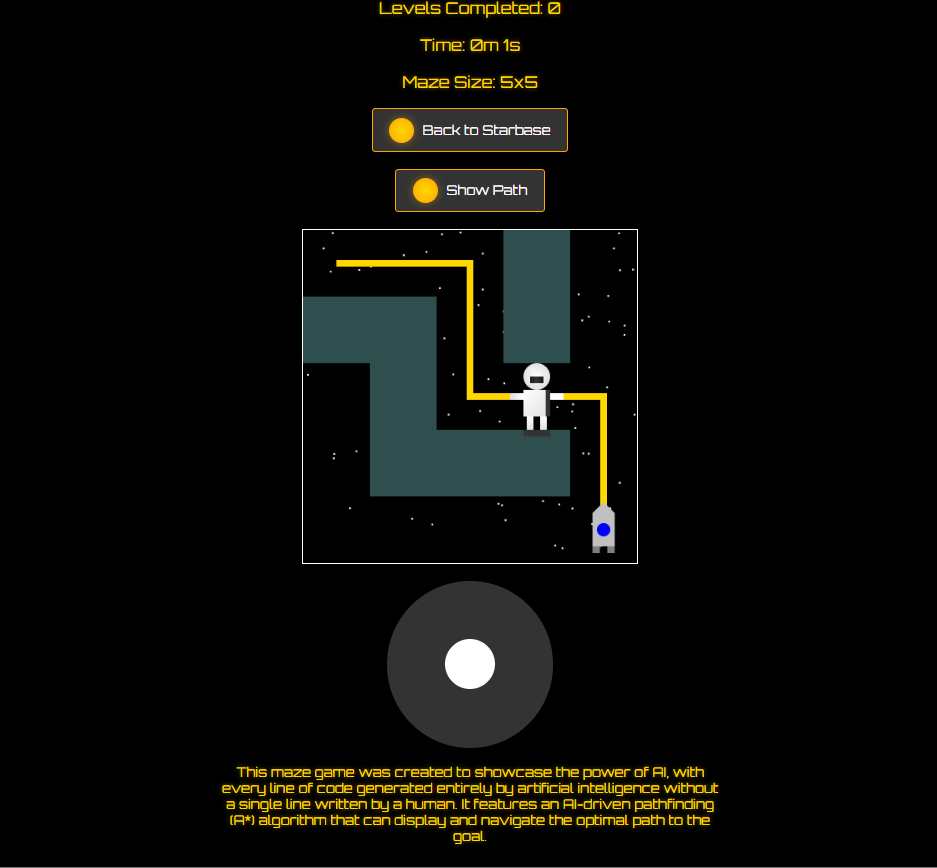

Projects
Software and hardware I've built by orchestrating AI agents: I set the goal and the architecture, the agents do much of the coding, and I test it in the real world.
Now · early stage · exploring
Robot reliability tools
Exploring robot-reliability tools on my own time — early experiments in remote diagnosis and a small adapter concept. Nothing is built or sold yet. If you run, service or integrate commercial robots, I'd like to hear where yours stop.
Platform · private
Orbit
A local, private data and case-ops platform (prototype on synthetic data). Built from hands-on SOP and automation work, it replaces scattered spreadsheets and case-management tools.
Android · drone
Tello follow-me
An Android app that makes a DJI Tello drone follow a person using on-device computer vision.
Hardware · vision
Camera rover
An ESP32-CAM + Arduino rover that follows people with computer vision: Arduino Uno motor control, ESP32-CAM Wi-Fi bridge, PC-side vision and a custom HTTP/serial protocol, built on an Arduino rover kit.
Local AI · in development
Familiar
A local, teachable reflex-and-memory brain (in development): code rules first, a 0.8B router that decides in ~0.055s, then a 4B model with schema-checked JSON skills, all on a 6GB GPU. I'm exploring it on my own time, as part of early remote-diagnosis experiments. In Swarm Lab tests a JSON schema took a 3B model from 40% to 100% valid tool calls, and a warm request runs end to end in about 0.5–1.6s.

Browser demo
AI Maze Navigator
A small exploration of AI pathfinding and procedural maze generation.